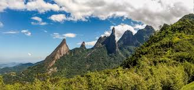

O Parque Nacional da Serra dos Órgãos (PARNASO) é uma das mais importantes áreas de conservação do Brasil, localizado na região serrana do estado do Rio de Janeiro. Com uma área de aproximadamente 110.000 hectares, o parque abriga uma rica biodiversidade, incluindo diversas espécies de flora e fauna ameaçadas de extinção. É famoso por suas imponentes formações rochosas, como o Dedo de Deus e o Pico da Pedra do Sino, além de oferecer trilhas desafiadoras e vistas panorâmicas deslumbrantes. O parque é um destino popular para os amantes do ecoturismo e da aventura, oferecendo atividades como caminhadas, escaladas e observação de aves. As trilhas mais conhecidas incluem a Travessia Petrópolis-Teresópolis, que liga as cidades de Petrópolis e Teresópolis através de uma rota deslumbrante, e a trilha para o Pico da Pedra do Sino, o ponto mais alto do parque, com 2.263 metros de altitude. O PARNASO também é um importante refúgio para a fauna local, incluindo espécies como o mico-leão-dourado, o tamanduá-bandeira e diversas aves endêmicas. Além disso, o parque desempenha um papel crucial na preservação dos recursos hídricos da região, sendo responsável por abastecer diversas cidades com água potável. A visitação é controlada para garantir a conservação do ambiente natural, e os visitantes são incentivados a seguir as diretrizes de preservação durante suas atividades no parque.